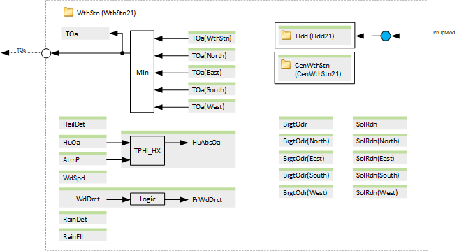

[WthStn21] Weather station
Program block, name / node subtype: [WthStn21] Weather station
Library hierarchy: Universal equipment
Family: WthStn
Project tree | Diagram |
|---|---|
|  |

Configurator


Program blocks are stored in the library without I/Os. Use the auto-create and auto-connect functions to create I/Os and/or to connect them to the interface blocks, e.g., R_A, CMD_B. Alternatively, take the I/Os from the folder containing the predefined I/Os in the library and/or from the plant and connect them to the interface blocks.
Function
Reads signals from various optional sensors, such as outside air temperature and humidity.
It can accommodate either a single optional outside air temperature sensor or up to four different sensors to measure temperature in four directions. This setup is also applicable to solar radiation and outdoor brightness sensors.
An optional coordination function (CenWthStn21) is available to distribute certain signals to DRA.
There is also an optional feature for calculating heating degree days (Hdd21).
Mandatory elements
Name | Description | Type | Alarm / Notification class | Trend / Type | |
|---|---|---|---|---|---|
TOa | Outside air temperature | ACalcVal: Analog calculated value | No | Yes, 3 | |
Optional elements
Name | Description | Type | Alarm / Notification class | Trend / Type | |
|---|---|---|---|---|---|
TOa(WthStn) | Outside air temperature (weather station) | AI: Analog input | Yes, 8 | Yes, 3 | |
TOa(North) | Outside air temperature (North) | AI: Analog input | Yes, 8 | Yes, 3 | |
TOa(East) | Outside air temperature (East) | AI: Analog input | Yes, 8 | Yes, 3 | |
TOa(South) | Outside air temperature (South) | AI: Analog input | Yes, 8 | Yes, 3 | |
TOa(West) | Outside air temperature (West) | AI: Analog input | Yes, 8 | Yes, 3 | |
Hdd | Heating degree days | N/A | N/A | ||
HailDet | Hail detector | BI: Binary input | Yes, 8 | Yes, 4 | |
HuOa | Outside air humidity | AI: Analog input | Yes, 8 | Yes, 3 | |
HuAbsOa | Outside air absolute humidty | ACalcVal: Analog calculated value | No | Yes, 3 | |
AtmP | Atmospheric pressure | AI: Analog input | Yes, 8 | Yes, 2 | |
CenWthStn | Central weather station | N/A | N/A | ||
WdSpd | Wind speed | AI: Analog input | Yes, 5 | Yes, 2 | |
WdDrct | Wind direction | AI: Analog input | Yes, 8 | No | |
Further elements that belong to this element: PrWdDrct | Present wind direction | MCalcVal: Multistate calculated value | Alarm: No | Trend: Yes, 3 | |||||
RainDet | Rain detector | BI: Binary input | Yes, 8 | Yes, 4 | |
RainFll | Rainfall | AI: Analog input | Yes, 8 | Yes, 2 | |
BrgtOdr | Outdoor brightness | AI: Analog input | Yes, 8 | Yes, 2 | |
BrgtOdr(North) | Outdoor brightness (North) | AI: Analog input | Yes, 8 | Yes, 2 | |
BrgtOdr(East) | Outdoor brightness (East) | AI: Analog input | Yes, 8 | Yes, 2 | |
BrgtOdr(South) | Outdoor brightness (South) | AI: Analog input | Yes, 8 | Yes, 2 | |
BrgtOdr(West) | Outdoor brightness (West) | AI: Analog input | Yes, 8 | Yes, 2 | |
SolRdn | Solar radiation | AI: Analog input | Yes, 8 | Yes, 2 | |
SolRdn(North) | Solar radiation (North) | AI: Analog input | Yes, 8 | Yes, 2 | |
SolRdn(East) | Solar radiation (East) | AI: Analog input | Yes, 8 | Yes, 2 | |
SolRdn(South) | Solar radiation (South) | AI: Analog input | Yes, 8 | Yes, 2 | |
SolRdn(West) | Solar radiation (West) | AI: Analog input | Yes, 8 | Yes, 2 | |